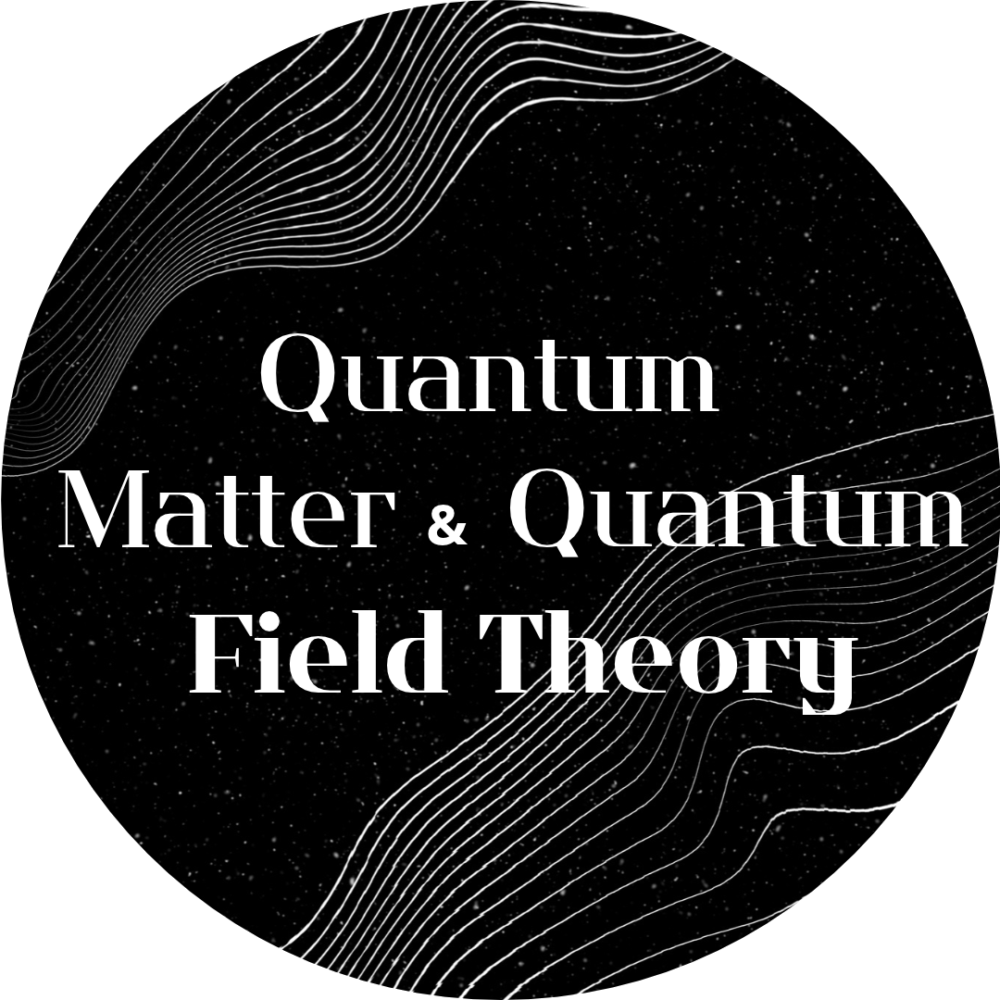

News & Highlights
Group news, recommended papers, recent preprints, seminars, and scientific events from the international research community in quantum matter and quantum field theory.
Loading arXiv feed…

Quantum Matter and Quantum Field TheoryResearch group · UEL State University of LondrinaGroup news, recommended papers, recent preprints, seminars, and scientific events from the international research community in quantum matter and quantum field theory.
Loading arXiv feed…